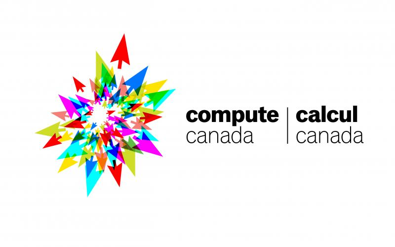
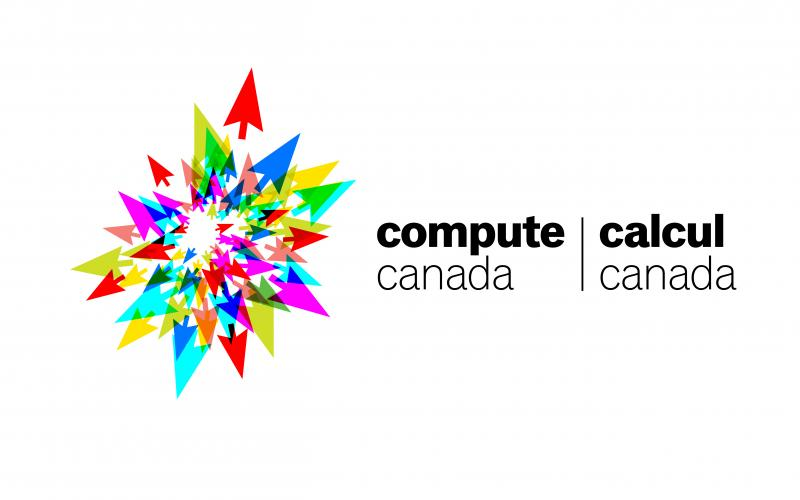

Farhana H. Zulkernine, PhD, PEng
Professor
Director, Bigdata Analytics and Management (BAM) Laboratory
637 Goodwin Hall (Map)
School of Computing, Queen's University
Kingston, Ontario, Canada K7L
2N8
E-mail:
farhana@cs.queensu.ca | Tel: (613) 533-6426 | Fax: (613) 533-6513
Program Chair 2023 Canadian Artificial Intelligence Association (CAIAC) Conference, Montreal, Canada
Program Chair CFP 2022 and 2021 IEEE International Conference on Digital Health
Program Chair CFP 2021 IBM International Conference CASCON X EVOKE (You Tube Video clip)
Check out the NEWS about our research

Farhana Zulkernine is a Professor and the Coordinator of the Cognitive Science program at the School of Computing at Queen's University. She holds a Ph.D. degree from the School of Computing at Queen's University and is a member of Professional Engineers of Ontario. She has more than 15 years of international work experience in three continents in software design, analysis and research. As a researcher she has worked with CA Technologies, IBM Canada, SAP Germany and Fondazione Bruno Kessler in Italy. Her research interests include service and cloud computing, big data analytics and management, and cognitive computing. She has ongoing research collaborations with IBM Canada, Roche, Pfizer, Markitech, Gnowit, Calian, the Centre for Advanced Computing (CAC), Compute Canada, Canadian Primary Care Sentinel Services Network (CPCSSN), and Queen's School of Medicine, Law, and Business. She has taught a wide number of courses in database management systems, cognitive science and machine learning. Her research has been funded by IBM, CFI, MITACS, NSERC CRD, Discovery and CREATE, OCE VIP, CUTRIC, CIMVHR, SOSCIP and Queen's. She has published in many reputed journals and international conferences and served on a variety of conference program and grant committees as an expert in big data and machine learning.
Cognitive Science Program:
Important Information
Research Interests:
- Big and Streaming Data Management and Analytics
- Artificial Intelligence
- Deep Learning (IoT, text and video/image data) and Decision Support Systems (DSS)
- Cognitive Computing
- Knowledge Management Systems
- Cloud and Services Computing
Fields of Application
- Medical/health information systems, wearable health monitors
- Autonomous vehicles and smart cities
- Medical, law and financial data analytics
Check the BAM Lab Website for information about open positions.
Teaching:
Winter 2025 Courses
Previously Taught Courses
- COGS 100 : Introduction to Cognitive Science
- COGS 201: Cognition and Computation
- COGS 300: Programming Cognitive Models
- COGS 499: Advanced Undergraduate Project
- COGS 400/CISC/CMPE 452: Neural and Genetic Cognitive Models
- CISC 874: Neural and Genetic Computing
- CISC 432/832: Advanced Database Management Systems
Recent Funding:
- Connected Mind Research Grants (Seed Grant- Co-PI) 2025.
- NSERC Discovery Grant 2025-2030.
- Connected Mind Research Grants (Group Reserch Grants, Applicant on two funded grants) 2025.
- NSERC New Frontiers in Research Fund (NFRF-E) 2023-2026.
- NSERC RTI 2022.
- NFRF Pandemic Recovery 2022-2025 funding for remote triage system using voice and video interactive bot
- Medlior-Roche funding for a study on detecting Dementia and Alzheimer's in the primary care population
- Pfizer Canada funding for a study on pain level and medication for Osteoarthritis in the primary care
- Mitacs funding with Thales 2022 for anlomaly detection and correlation analysis for Train Automomy Platform
- Mitacs funding with Markitech for Hi-Sarah interactive Bot for elderly population
- Several Industry Mitacs funding with Markitech, YourDoctorsOnline, 2020-2021
- NSERC CRD (Collaborative Research and Development), 2020
- Mitacs Accelerate Grants with CUTRIC, 2020
- Queen's Research Opportunities Funds (QROF), 2019
- New Frontiers in Research Fund (Coinvestigator), 2019
- NSERC CREATE (co-PI) on Cybersecurity, 2019
- Canadian Urban Transit Research and Innovation Consortium (CUTRIC), 2019
- IBM Centre for Advanced Computing (CAS) research grant, 2018
- Canada Foundation for Innovation (CFI) Grant, 2018
- NSERC Discovery Grant, 2018
Professional Membership:
- Canadian Artificial Intelligence Association (CAIAC)
- Expert team member, Queen's Conflicts Analytics Lab
- AI Expert, Canadian Urban Transit Research and Innovation Consortium (CUTRIC) Advisory Group
- Big Data Analytics Expert, SOSCIP Scientific Advisory Committee
- Licensed member of the Professional Engineers of Ontario (PEO)
- IEEE Computer Society
- INSTICC (Institute for Systems and Technologies of Information, Control and Communication)


 
